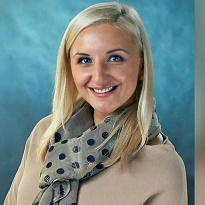
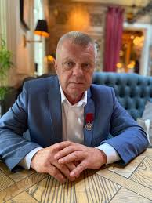

Наш персонал
Роман Геннадьевич Гольдман
Генеральный директор
Основатель компании. Руководит стратегическим развитием с 2023 года.

Анастасия Викторовна Литвинова
Финансовый директор
Управляет финансовыми потоками и инвестиционными проектами. Разработала систему оптимизации налоговой нагрузки компании.

Иван Сергеевич Трофимов
Главный агроном
Эксперт в области органического земледелия. Автор 12 запатентованных методик повышения урожайности культур.
Мария Александровна Ефимова
Агроаналитик
Специалист по предиктивной аналитике урожаев. Разрабатывает системы мониторинга состояния посевов с использованием ИИ.
Дмитрий Петрович Колесников
Руководитель отдела логистики
Создал систему "холодных цепочек" для сохранности продукции. Сократил логистические издержки на 23% за 2 года.
Елена Владимировна Орлова
Менеджер по снабжению
Эксперт по закупкам сельхозтехники и ГСМ. Выстроила сеть надежных поставщиков из 15 стран.